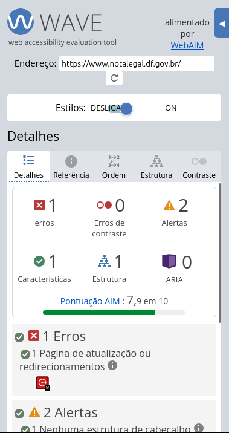
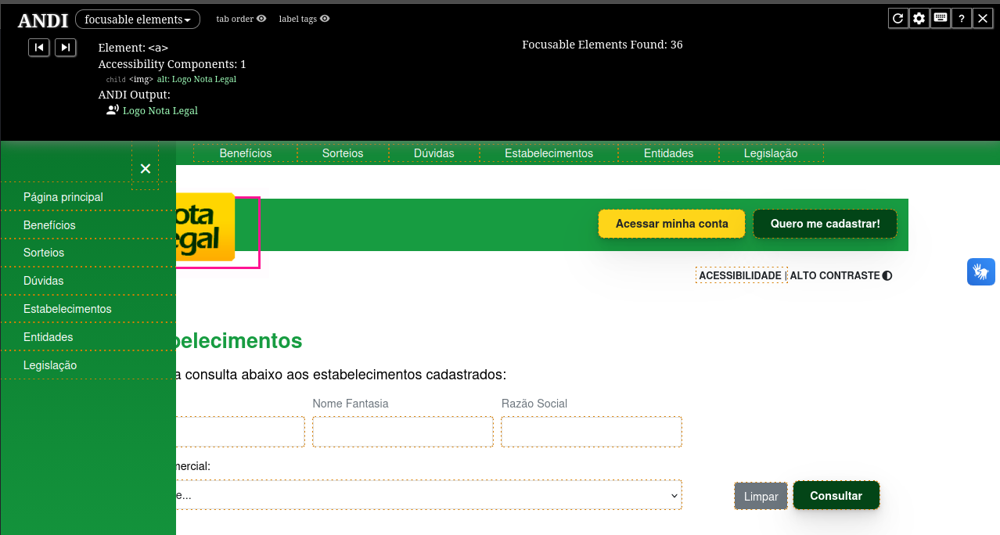
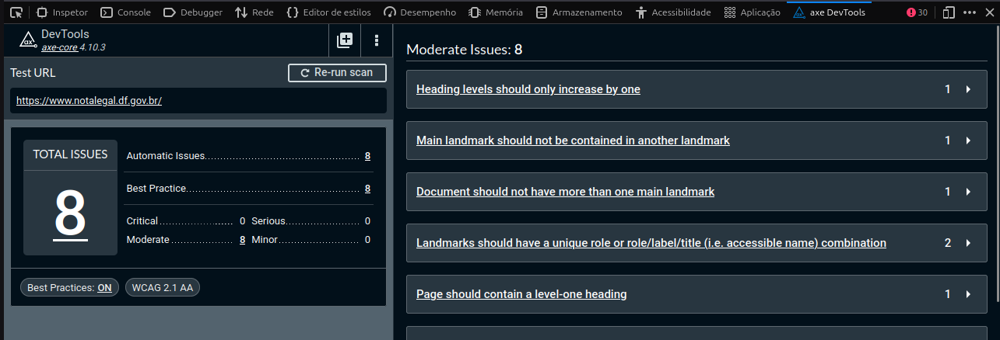
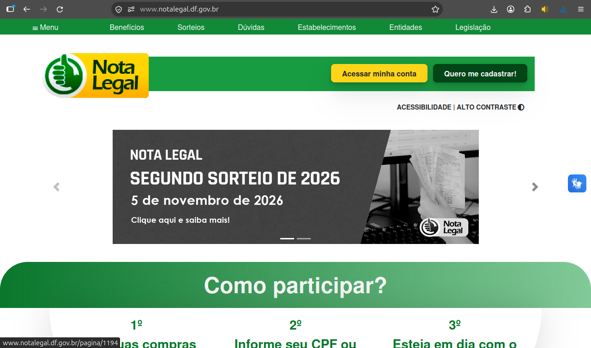
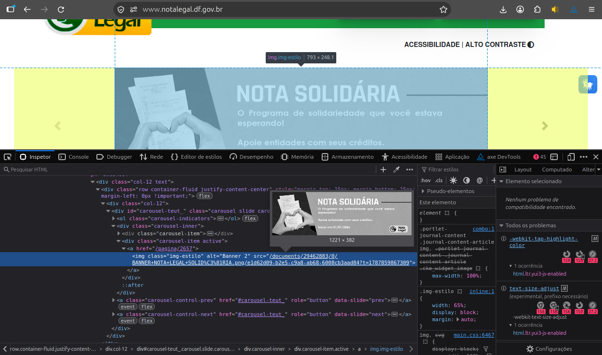
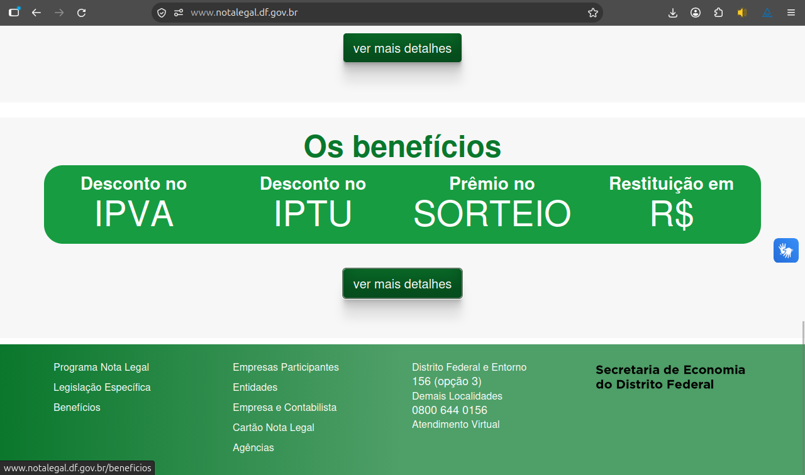
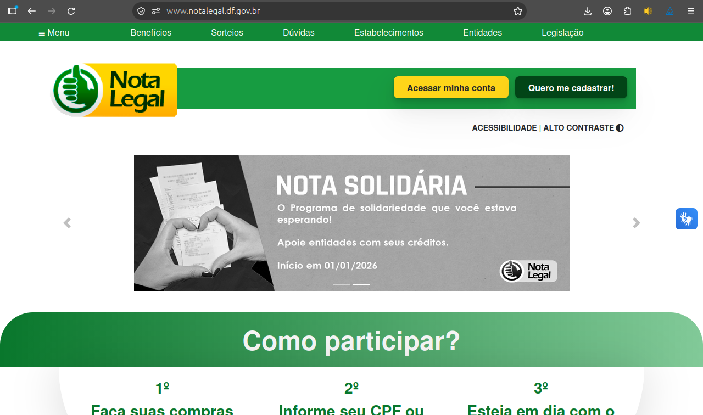
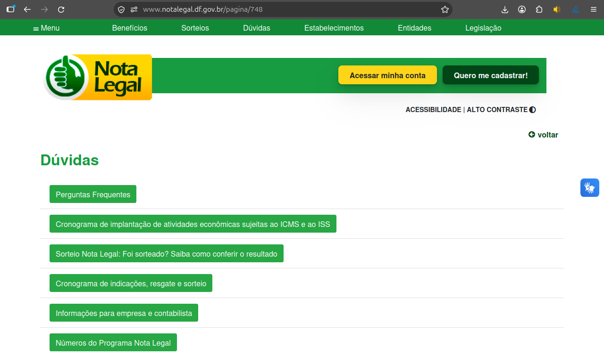
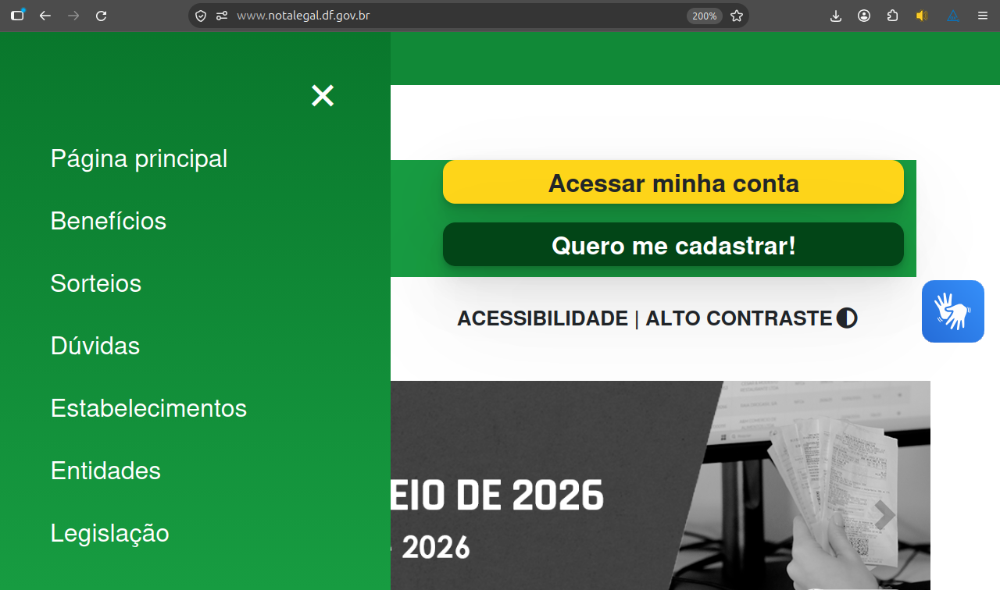
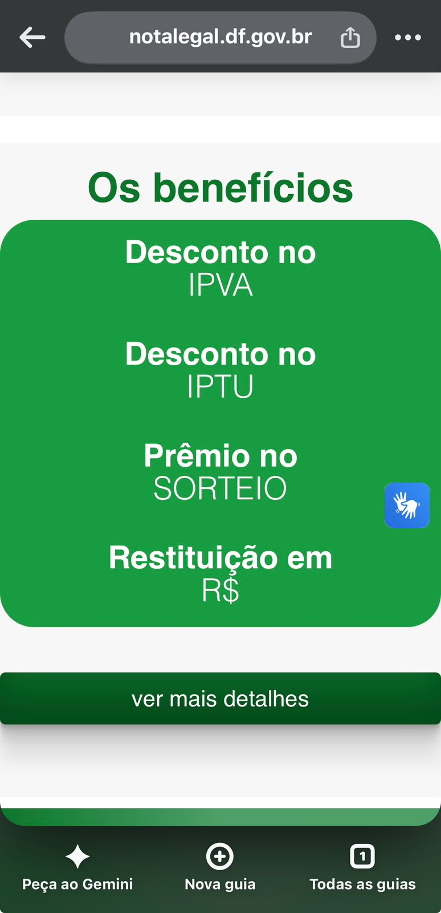

Inspeção do Nota Legal
Esta página reúne a avaliação por inspeção do site Nota Legal DF, feita pela equipe com os checklists deste guia, três ferramentas automáticas e testes manuais. Ela complementa o teste com usuário: a inspeção mostra o que viola a norma, e o teste mostra o que atrapalha quem usa o site de verdade.
Resumo
Conteúdo forte, desenvolvimento fraco. Dos 28 critérios aplicados, 12 estão conformes, 7 parciais e 8 não conformes. Quatro falhas são de nível A da WCAG (1.1.1, 2.1.1, 2.2.2 e 2.4.4), o mínimo exigido. Enquanto elas existirem, o portal não atende à Lei Brasileira de Inclusão (art. 63) nem à ABNT NBR 17225.
Planejamento (DECIDE)
A avaliação foi planejada com o framework DECIDE (Rogers, Sharp e Preece, 2013).
| Etapa | Decisão |
|---|---|
| Objetivo | Verificar a conformidade do portal com a WCAG e com as heurísticas de Nielsen, identificando barreiras para pessoas com limitações visuais, motoras ou cognitivas. |
| Métodos | Inspeção por checklist (Gestão, Design, Desenvolvimento e Conteúdo), ferramentas automáticas (WAVE, ANDI e axe DevTools) e testes manuais de teclado, zoom de 200% e celular. |
| Escopo | Página inicial, menu principal e menu lateral, Estabelecimentos, Sorteios, fluxo de cadastro e opções de acessibilidade. |
| Ética | Inspeção da área pública, sem usuários e sem envio de dados pessoais reais. |
| Base normativa | WCAG 2.2, ABNT NBR 17225:2025, Lei Brasileira de Inclusão (art. 63) e e-MAG. |
Perguntas da avaliação
- Q1. Dá para navegar só pelo teclado, inclusive no Alto Contraste?
- Q2. O foco é visível, o contraste é adequado e as imagens têm texto alternativo?
- Q3. Links, títulos, landmarks e rótulos orientam o leitor de tela?
- Q4. Erros, avisos e mudanças na tela são comunicados além do visual?
- Q5. A pessoa sabe onde está dentro do site?
Como classificamos
- C (conforme), P (parcialmente conforme), NC (não conforme) ou NA (não aplicável, como processos internos do órgão).
- Cada problema recebeu uma severidade de 0 a 4 (escala de Nielsen: 0 não é problema, 1 cosmético, 2 menor, 3 grave, 4 catastrófico) e um esforço estimado de correção.
Resultado por área
| Área | Critérios | Conformes | Parciais | Não conformes | Não aplicáveis |
|---|---|---|---|---|---|
| Conteúdo | 9 | 7 | 2 | 0 | 0 |
| Design | 9 | 5 | 3 | 1 | 0 |
| Desenvolvimento | 7 | 0 | 2 | 5 | 0 |
| Gestão de Projetos | 3 | 0 | 0 | 2 | 1 |
| Total | 28 | 12 | 7 | 8 | 1 |
Gestão de Projetos (3 critérios)
| Critério | Status | Evidência |
|---|---|---|
| Considerar acessibilidade desde a iniciação | NA | Processo interno do órgão, não verificável externamente. |
| Aplicar princípios de desenho universal | NC | O texto alternativo dos banners é genérico (“Banner 1”) e há texto dentro das imagens. |
| Conformidade com a LBI (art. 63) e a ABNT NBR 17225 | NC | Há falhas de nível A da WCAG (1.1.1, 2.1.1, 2.2.2 e 2.4.4). |
Design (9 critérios)
| Critério | Status | Evidência |
|---|---|---|
| Informar a localização do usuário (Heurística 1) | P | A etapa (“Passo 2 de 5”) só aparece no cadastro; o breadcrumb não marca a página atual. |
| Design estético e minimalista (Heurística 8) | C | Só as informações relevantes à tarefa. |
| Contraste de texto, mínimo 4,5:1 (WCAG 1.4.3) | C | O WAVE não detectou erros de contraste. |
| Contraste de componentes, mínimo 3:1 (WCAG 1.4.11) | C | Botões e campos com contraste adequado na inspeção visual. |
| Design responsivo, sem rolagem horizontal (WCAG 1.4.10) | P | Funciona no celular, mas as imagens ficam pequenas e as tabelas, apertadas. |
| Mensagens de erro sugerem correção (WCAG 3.3.3) | NC | Aparece apenas “data inválida”, sem o formato esperado. |
| Erros indicados por mais de um recurso (WCAG 3.3.1) | C | O campo com erro é indicado de forma clara. |
| Texto ampliado até 200% (WCAG 1.4.4) | P | O menu superior perde conteúdo com o zoom de 200%. |
| Não restringir a orientação da tela (WCAG 1.3.4) | C | Funciona em retrato e paisagem. |
Desenvolvimento (7 critérios)
| Critério | Status | Evidência |
|---|---|---|
| Navegação por teclado (WCAG 2.1.1) | P | Quase tudo é alcançável por Tab, exceto o Alto Contraste. |
| Foco sempre visível (WCAG 2.4.7) | P | O indicador de foco tem cor próxima à do fundo. |
| Evitar texto dentro de imagens (WCAG 1.4.5) | NC | Os banners trazem títulos e datas na própria imagem. |
| Nomes de links claros (WCAG 2.4.4) | NC | Há links que mostram só “pagina” e um número, como /pagina/1194. |
| Texto alternativo em imagens (WCAG 1.1.1) | NC | O atributo alt existe, mas diz apenas “Banner 1”. |
| Anunciar mudanças dinâmicas (WCAG 4.1.2 e 4.1.3) | NC | Não foram encontradas regiões aria-live nem anúncios de mudanças. |
| Pausar animações automáticas (WCAG 2.2.2) | NC | O carrossel da página inicial não pode ser pausado. |
Conteúdo (9 critérios)
| Critério | Status | Evidência |
|---|---|---|
| Linguagem simples e direta (WCAG 3.1.5) | C | Linguagem de fácil compreensão. |
| Títulos, subtítulos e parágrafos curtos (WCAG 2.4.6) | C | Organização textual adequada. |
| Uso semântico de h1 a h6 (WCAG 1.3.1) | P | O axe aponta que a página não tem título de nível 1. |
| Ordem lógica de títulos | P | Um h4 (“156 (opção 3)”) aparece sem os níveis anteriores. |
| Evitar siglas e termos técnicos (WCAG 3.1.3) | C | Termos claros para o público geral. |
| Consistência terminológica | C | Os mesmos nomes para botões, seções e funções. |
| Idioma da página (WCAG 3.1.1) | C | lang="pt-BR" no elemento html. |
| Listas estruturadas (WCAG 1.3.1) | C | Estrutura de lista adequada. |
| Título da aba descritivo (WCAG 2.4.2) | C | Título único e descritivo. |
Ferramentas automáticas
| Ferramenta | Resultado | O que encontrou |
|---|---|---|
| WAVE (WebAIM) | 7,9 de 10 (AIM) | 1 erro (atualização automática da página por meta refresh), 0 erros de contraste e 2 alertas. |
| ANDI | 36 elementos focalizáveis | O Alto Contraste não está entre os elementos alcançáveis pelo Tab. |
| axe DevTools (axe-core 4.10.3) | 8 problemas moderados, 0 críticos | Página sem h1, salto para h4, dois landmarks main, menus sem nome próprio e conteúdo fora de landmarks (widget VLibras). |



O que as ferramentas não viram
Nenhuma ferramenta apontou o texto alternativo genérico, o foco quase invisível ou o carrossel sem pausa. Esses problemas, os mais graves, só apareceram na inspeção manual. Por isso combinamos os dois métodos.
Os três problemas graves
Os três têm severidade 3 (grave) e esforço de correção baixo.
1. Banners que o leitor de tela não lê
WCAG 1.1.1 (nível A) e 1.4.5 (nível AA). Os banners têm texto alternativo genérico, como “Banner 1”, e o título e as datas estão desenhados dentro da imagem. Quem usa leitor de tela não sabe se o banner anuncia um sorteio, um aviso ou um evento.

Banner da página inicial: título e data desenhados na imagem.
Ver o código do banner no inspetor

<!-- Hoje -->
<img src="..." alt="Banner 1">
<!-- Proposto: o alt repete a mensagem do banner -->
<img src="..." alt="Segundo sorteio de 2026: 5 de novembro de 2026">
<!-- Imagem puramente decorativa -->
<img src="detalhe.svg" alt="">
O ideal é tirar o texto de dentro da imagem e escrevê-lo em HTML, sobre a imagem ou ao lado dela.
2. Quem usa teclado se perde na página
WCAG 2.4.7 (AA) e 2.1.1 (A) · Heurística 7. O contorno de foco tem cor próxima à do fundo: ao apertar Tab, quase não se vê onde se está. E a opção de Alto Contraste, feita para quem tem baixa visão, não é alcançada pelo teclado.

Captura com o foco do teclado em um elemento da página. Dá para ver onde ele está?
a:focus-visible, button:focus-visible, input:focus-visible, select:focus-visible {
outline: 3px solid #0b3d91;
outline-offset: 2px;
box-shadow: 0 0 0 2px #ffffff; /* mantém o foco visível também sobre fundo escuro */
}
<!-- Botão nativo: alcançável por Tab e acionável por Enter ou Espaço -->
<button type="button" id="alto-contraste" aria-pressed="false">Alto contraste</button>
O foco precisa de contraste mínimo de 3:1 com as cores ao redor, sobre os fundos verde e branco do portal.
3. Um carrossel que não para
WCAG 2.2.2 (A) e 4.1.3 (AA) · Heurística 3. O carrossel da página inicial troca sozinho e só tem setas, sem botão de pausa. Movimento automático que dure mais de 5 segundos precisa poder ser pausado, parado ou ocultado. Também não encontramos regiões aria-live anunciando as mudanças.

Carrossel da página inicial: só setas, nenhum controle de pausa.
<section aria-roledescription="carrossel" aria-label="Destaques do Nota Legal">
<button type="button" id="alternar" aria-label="Pausar rotação dos destaques">Pausar</button>
<div id="slides" aria-live="off">
<div role="group" aria-roledescription="slide" aria-label="1 de 4"> ... </div>
</div>
</section>
// Enquanto o carrossel gira, aria-live fica desligado; ao pausar, passa a "polite".
const botao = document.getElementById('alternar');
const slides = document.getElementById('slides');
let rodando = true;
botao.addEventListener('click', () => {
rodando = !rodando;
rodando ? iniciarAutoplay() : clearInterval(autoplay); // funções do carrossel existente
slides.setAttribute('aria-live', rodando ? 'off' : 'polite');
botao.textContent = rodando ? 'Pausar' : 'Retomar';
});
Padrão de referência: WAI-ARIA Authoring Practices – Carousel.
Outras não conformidades
| Problema | Critério | Sev. | Correção |
|---|---|---|---|
| Links só com o número da página (“/pagina/1194”) | WCAG 2.4.4 (A) · H2 | 3 | Texto que diz o destino, como “Regulamento do sorteio” |
| Erro “data inválida” sem dizer o formato | WCAG 3.3.3 (AA) · H9 | 2 | “Formato de data inválido. Use DD/MM/AAAA.” |
| Breadcrumb não marca a página atual | Heurística 1 | 2 | aria-current="page" e estilo próprio no último item |
| Página sem h1 e salto direto para h4 | WCAG 1.3.1 e 2.4.6 | 2 | Um h1 por página e níveis em sequência |
| Menu superior perde conteúdo com zoom de 200% | WCAG 1.4.4 (AA) | 2 | Unidades relativas e menu recolhível |
| No celular, imagens pequenas e tabelas apertadas | WCAG 1.4.10 (AA) | 2 | max-width: 100% nas imagens e rolagem só dentro da tabela |
| Dois landmarks main e menus sem nome próprio | Boas práticas (axe) | 2 | Um único main e aria-label distinto em cada nav |



Heurísticas de Nielsen: inspeção e teste
A tabela junta os dois métodos. Violada: a inspeção encontrou violação com evidência, mesmo que a participante do teste não tenha sentido o problema. Ressalva: a inspeção aprovou, mas o teste com usuário mostrou um problema.
| Heurística | Inspeção | Teste com usuário | Resultado |
|---|---|---|---|
| H1 · Visibilidade do status | Etapas só no cadastro; breadcrumb sem a página atual | Não avaliada | Parcial |
| H2 · Correspondência com o mundo real | Linguagem simples, mas links “página 1194” | Editais atualizados | Parcial |
| H3 · Controle e liberdade | Carrossel sem pausa | Navegação sem bloqueios | Violada |
| H4 · Consistência e padrões | Nomes consistentes | FAQ abre outro domínio, com outro visual | Ressalva (teste) |
| H5 · Prevenção de erros | Formulários validam a data | Barra superior some ao rolar | Ressalva (teste) |
| H6 · Reconhecimento em vez de memorização | Opções visíveis nos menus | Botão de cadastro não percebido | Ressalva (teste) |
| H7 · Flexibilidade e eficiência | Alto Contraste sem teclado | Informação achada rápido | Violada |
| H8 · Design estético e minimalista | Visual limpo, sem erros de contraste | Visual limpo | Atendida |
| H9 · Ajudar a corrigir erros | “Data inválida” sem o formato | Nenhum erro exigiu ajuda | Violada |
| H10 · Ajuda e documentação | Sem ajuda focada na tarefa | Atendimento achado em 8 s | Divergente |
Resultado: 3 violadas, 3 com ressalvas do teste, 2 parciais, 1 atendida e 1 divergente. Na H10, a inspeção procurou uma ajuda organizada por tarefa e não achou; a participante só precisou do atendimento, que está no rodapé.
Respostas às perguntas da avaliação
| Pergunta | Resposta |
|---|---|
| Q1. Navegação só pelo teclado | Parcial: quase tudo é alcançável, exceto o Alto Contraste. |
| Q2. Foco, contraste e texto alternativo | Contraste de texto sem erros; foco de baixa visibilidade; alt genérico e texto dentro das imagens. |
| Q3. Semântica para o leitor de tela | Não plenamente: sem h1, salto de nível, dois landmarks main, menus sem nome e links genéricos. |
| Q4. Erros e mudanças além do visual | O erro indica o campo com cor e texto, mas não sugere correção; mudanças dinâmicas não são anunciadas. |
| Q5. Saber onde está | Parcial: etapa indicada só no cadastro; breadcrumb sem a página atual. |
Limitações
- Inspeção feita pela equipe, sem participação de pessoas com deficiência.
- Avaliação em novembro de 2026; o portal pode ter mudado desde então.
- Escopo restrito às páginas e aos fluxos listados no planejamento.
- Componentes de terceiros, como o widget VLibras, estão fora do controle da equipe do portal.
- As ferramentas automáticas cobrem só parte dos critérios da WCAG e podem divergir entre si.
As recomendações que juntam esta inspeção e o teste com usuário estão em Recomendações e conclusão.
Referências
- BARBOSA, S. D. J.; SILVA, B. S. Interação Humano-Computador. Rio de Janeiro: Elsevier, 2010.
- BRASIL. Lei nº 13.146, de 6 de julho de 2015 (Lei Brasileira de Inclusão).
- NIELSEN, J. 10 Usability Heuristics for User Interface Design. Nielsen Norman Group.
- ROGERS, Y.; SHARP, H.; PREECE, J. Design de Interação: além da interação humano-computador. 3. ed. Porto Alegre: Bookman, 2013.
- W3C. Web Content Accessibility Guidelines (WCAG) 2.2, 2023.
- Ferramentas: WAVE, ANDI e axe DevTools.